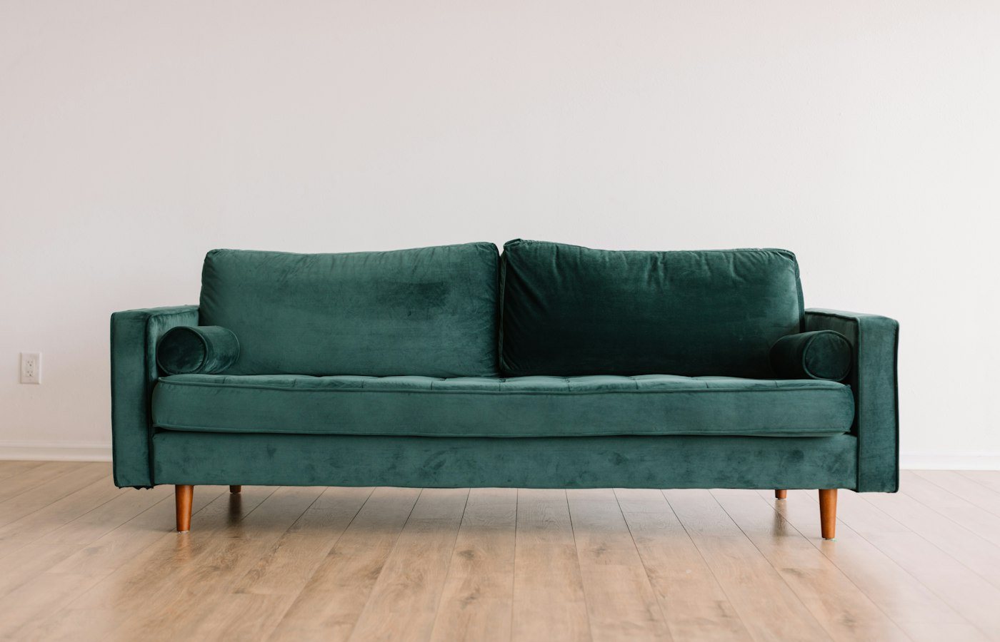
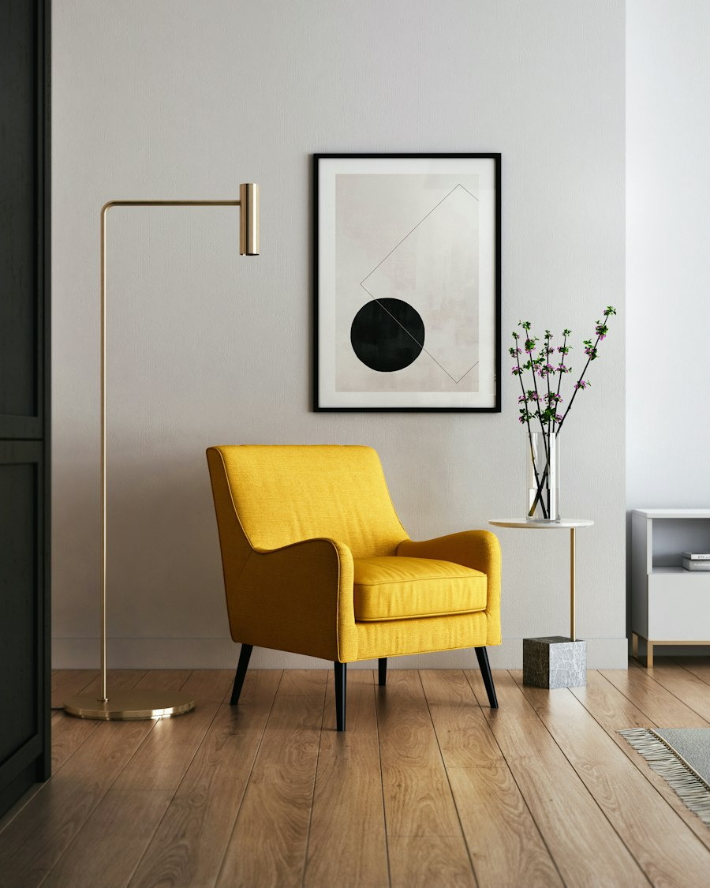

Psicologia clínica · Psicanálise
Onde a palavra falta, o sintoma fala.
Sou a Helena, psicóloga de orientação psicanalítica. Atendo adultos e adolescentes a partir de 16 anos no meu consultório em Pinheiros, em São Paulo, e também online.
Se você está pensando em começar uma análise, me mande uma mensagem. A gente marca uma primeira conversa e vê se faz sentido seguir.
Quem me procura
Muita gente chega dizendo que não sabe bem por onde começar. Outras pessoas chegam com um motivo claro: uma crise de ansiedade, a morte de alguém próximo, o fim de um casamento, um problema no trabalho que não sai da cabeça.
Também é comum a queixa aparecer no corpo. Insônia, cansaço, uma dor que os exames não explicam direito.
E tem quem venha porque percebeu que vive repetindo a mesma história, com pessoas diferentes, e quer entender por quê.
Você não precisa de um motivo “grave” para procurar análise. Se alguma coisa está incomodando a ponto de você pensar em procurar ajuda, já dá para conversar.
Como eu trabalho
A psicanálise começou com Freud, em Viena, no fim do século XIX. Ele percebeu que os pacientes melhoravam quando podiam falar à vontade, sem ser interrompidos nem corrigidos. Mais de cem anos depois, a base é a mesma: é um tratamento pela fala.
Na prática, eu peço que você diga o que vier à cabeça, mesmo o que parecer bobo, desconexo ou constrangedor. Não precisa organizar o pensamento antes. Muitas vezes a coisa mais importante aparece no meio de uma frase que começou falando de outro assunto.
Eu não dou conselhos nem passo tarefas. Meu trabalho é escutar com atenção e, de vez em quando, chamar sua atenção para algo que você disse e talvez não tenha ouvido.

O Eu não é senhor em sua própria casa.Sigmund Freud, em Uma dificuldade da psicanálise (1917)
Como começa
O primeiro passo é uma conversa. Você me conta o que está acontecendo, eu explico como trabalho, e você pode perguntar o que quiser: horários, valores, faltas. Não tem compromisso de continuar.
Se decidirmos seguir, as sessões costumam ser semanais. Algumas pessoas vêm duas vezes por semana. Isso a gente combina junto, e pode mudar com o tempo.
- Duração
- 50 minutos
- Onde
- No consultório, em Pinheiros, ou online por vídeo
- Horários
- Segunda a quinta, das 8h às 20h. Sábado de manhã.
- Valores
- Informo na primeira conversa, antes de começarmos
- Recibo
- Sim, para Imposto de Renda e reembolso do convênio
- Remarcação
- Avisando com 24 horas de antecedência, a sessão é remarcada na mesma semana, se houver horário
Sobre mim
Me formei em Psicologia em 2009. No primeiro estágio clínico, num ambulatório da zona oeste de São Paulo, fui atender com um supervisor psicanalista e não quis mais saber de outra coisa.
Fiz a formação em psicanálise entre 2010 e 2016 e, no mestrado, pesquisei o luto. Atendo em consultório desde 2011 e, como todo analista, sigo em análise pessoal e em supervisão.
Fora do consultório, leio muito romance, cuido mal das plantas e ando bastante a pé pelo bairro.
- 2009Graduação em Psicologia
- 2010–2016Formação em psicanálise, em São Paulo
- 2011Início do atendimento em consultório
- 2015Mestrado em Psicologia Clínica, com pesquisa sobre luto
O consultório

Presencial
Fica numa rua tranquila de Pinheiros, a cinco minutos a pé do metrô Fradique Coutinho. É um prédio pequeno, a sala fica no segundo andar e tem elevador. Na sala de espera tem água e café.
Rua Exemplo, 000, sala 00 · Pinheiros, São Paulo · SP
Online
Para quem mora longe ou tem a agenda apertada, atendo por vídeo. Só peço que você esteja num lugar reservado, onde ninguém consiga ouvir a conversa.
O atendimento online é regulamentado pelo Conselho Federal de Psicologia, e tenho cadastro no e-Psi.
Textos
De vez em quando escrevo sobre assuntos que aparecem muito no consultório.
Dúvidas comuns
Se a sua não estiver aqui, pode perguntar na primeira conversa.
Qual a diferença entre psicólogo, psicanalista e psiquiatra?
O psicólogo se formou em Psicologia e tem registro no Conselho Regional de Psicologia. O psiquiatra é médico e pode receitar remédios. Psicanalista é quem fez formação em psicanálise, que inclui análise pessoal, supervisão e estudo.
Eu sou psicóloga e trabalho com psicanálise. Se você faz ou precisar fazer acompanhamento psiquiátrico, os dois tratamentos podem acontecer ao mesmo tempo.
Vou ter que deitar no divã?
Não. Quase todo mundo começa sentado, de frente para mim. O divã pode entrar mais para frente, se fizer sentido, e a gente conversa sobre isso antes.
Quanto tempo dura uma análise?
Não tem como saber no começo. Tem gente que fica alguns meses, tem gente que fica anos. Você pode parar quando quiser, e a gente costuma conversar sobre isso ao longo do caminho.
Atendimento online é igual ao presencial?
Atendo online desde 2020 e muitos pacientes preferem assim. O que faz diferença é ter privacidade e uma internet razoável. Fone de ouvido ajuda bastante.
O que eu falar fica só entre nós?
Sim. O sigilo é uma obrigação prevista no Código de Ética do psicólogo. Ele só pode ser quebrado em situações muito específicas, como risco grave à sua vida ou à de outra pessoa.
Quanto custa?
Informo os valores na primeira conversa, junto com a forma de pagamento e a regra para faltas. Emito recibo para Imposto de Renda e para pedir reembolso ao convênio.
Você atende crianças?
Não. Atendo a partir dos 16 anos. Se for o caso, posso indicar colegas que trabalham com crianças e adolescentes mais novos.
E se eu estiver muito mal agora?
O consultório não funciona como serviço de emergência. Se você está pensando em se machucar ou não está conseguindo lidar com o que sente, procure ajuda agora:
CVV, pelo telefone 188 (24 horas, de graça) ou pelo site cvv.org.br. SAMU, 192. Ou vá até uma UPA ou pronto-socorro.
Contato
Pode me mandar mensagem pelo WhatsApp ou preencher o formulário. Eu mesma respondo, normalmente no mesmo dia.
- WhatsApp(11) 90000-0000, só mensagens
- E-mailcontato@helenavasconcelos.com.br
- ConsultórioPinheiros, São Paulo
Este contato não é para emergências. Se você precisa de ajuda agora, ligue para o CVV (188) ou para o SAMU (192).
Mensagem enviada
Obrigada. Vou te responder pelo contato que você deixou, normalmente no mesmo dia. Se preferir, pode me chamar direto no WhatsApp.
Abrir o WhatsApp